|
|
Lesson Contents | In this Lesson, you will learn how to configure User activities in a Process Timeline. |
In the last lesson, we identified the process we are trying to model. So far, we've built the Parent activity that contains our Approval Loop, we've added five child activities, and we've configured the first Child activity, the Faculty Advisor's approval. Now we can complete our Process Timeline to model our process.
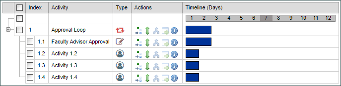
First, Let's configure the activities, then, once we're done, we'll set up the dependencies that will make our process model run in the order we want.
Open Activity 1.2 by double-clicking on the Activity text, or clicking on the Properties icon: .
Once the Properties dialog box opens, we will set the name as "Department Approval", then change the duration in the Activity tab to 3 Business Days. In the Participants tab, for now, we'll keep it set to Timeline Initiator, so we can watch it run when we test it. We'd normally set this to a specific group or user, but for now, we'll leave it alone. Finally, in the Results tab, we'll once again set the Approve and Deny results, and set the order just as we did before, with Approve set at 1 and Deny set at 2. Once we're done, we'll go ahead and click the Close button to close the Properties dialog box, and Update the Process Timeline.
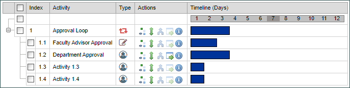
For Activity 1.3, let's open the Properties dialog, and change the name to "Dean's Office Approval" and, once again, set the Duration to 3 Business Days, and configure the results for Approve and Deny, just as we did in the previous activities. Once again, close the Properties Dialog and update the timeline.
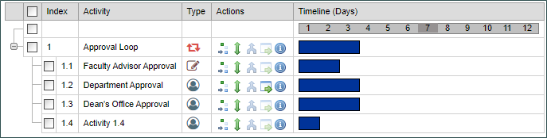
Finally, we can configure Activity 1.4 to name it "Registrar Change", set the duration to 1 Business Day, but this time, we'll set the Result to a single result, which we'll name "Advisor Assigned". Now we can close the Properties dialog box and update the Timeline again.
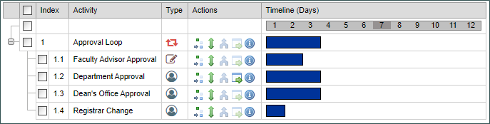
Now that all of our individual activities are configured, we'll set the dependencies to govern when the activities will run.
We want both the Department Approval and the Dean's Office approval to run in parallel. So we are going to make both activities dependent upon the Faculty Advisor Approval activity. To do this, we can simply drag and drop the Department Approval and Dean's Office Approval Activities to the Faculty advisor Approval activity by using the Depends On icon: . Once we';ve done so, the Process Timeline is configured so that both activities will begin and run in parallel as soon as the faculty advisor approval step completes.
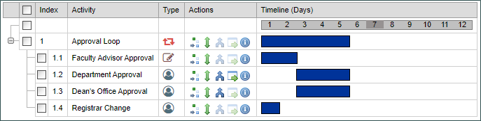
Setting the dependency on the Registrar change step will be a little different. We do not want this step to begin until both the Department Approval and Dean's Office Approval steps are complete. This requirement means that the Registrar change step needs two dependencies. So, we can't really drag and drop this dependency like we did on the other activities. To make this dependency work, we need to open the Properties dialog box of the Registrar Change activity and navigate to the Start When tab.
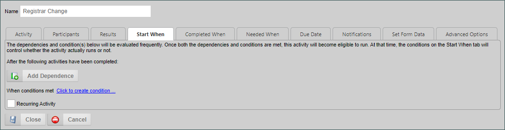
The Start When tab provides a way of assigning more complex dependencies. Click the Add Dependence button twice to add the two depndencies we need.
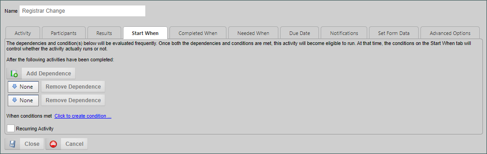
For the first dependence, click the dropdown menu that currently says "None" and select Department Approval from the dropdown menu.
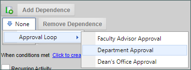
Now, repeat this for the second dependence, this time selecting the Dean's Office Approval option.
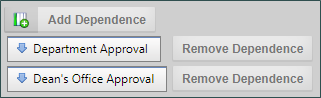
Close the Properties dialog box, and Update the Timeline. We have no ensured that the Registrar Change activity cannot begin until both of its predecessor activities are finished.
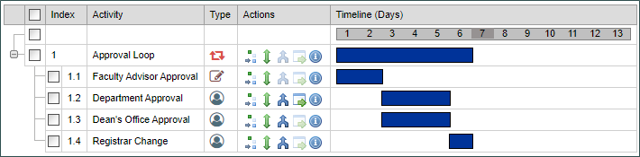
We can actually check these dependencies in the Gatt chart by simply clicking on the bar for the Registrar Change activity. When we do, we can see that the Registrar Change activity is highlighted in gray, while the two predecessor activities are highlighted in green.
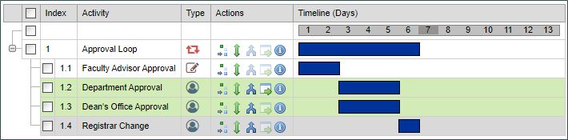
You can always click on any Gantt Chart bar to see the predecessors and successors for any activity. The predecessor activities will always be highlighted in green, while the successor activities are highlighted in red. For instance, when we click on the Department approval activity, we can see that the predecessor activity is the Faculty Advisor approval, while the successor activity is the Registrar Change activity.
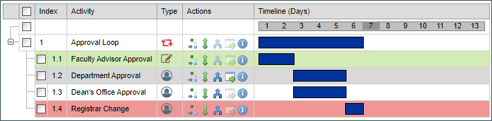
We can use this method to quickly check to see the status of any activity's dependencies. At this point, everything should be complete for now, so we can save and close the Process Timeline.
In this lesson, we completed our Process Timeline and set the dependencies of all of the individual Timeline Activities. Our Process Timeline and form are mostly complete.